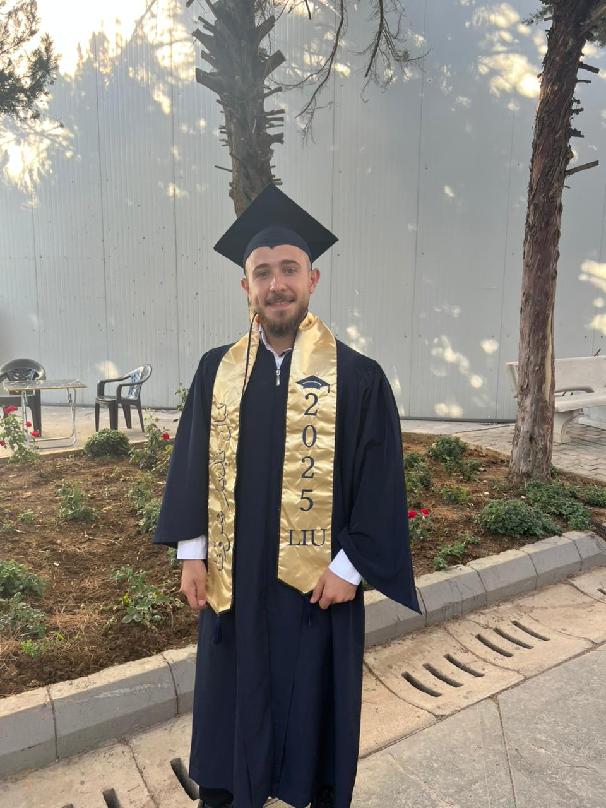

👤 about me

Nibal Sharrouf
junior data analyst · Power BI · Excel · SQL · Python · Google certified
Motivated and detail-oriented, I transform data into meaningful business insights. This portfolio showcases my capstone project (Cyclistic bike‑share), along with the BMW sales dashboard. Based on the human side of data — always curious, always learning.
📄 resume
Nibal Sharrouf
📌 Professional Summary
Motivated and detail-oriented Junior Data Analyst with strong interest in transforming data into meaningful business insights. I recently completed the Google Data Analytics Professional Certificate and worked on real-world data analysis projects using tools such as Power BI, Excel, SQL, and Python. Passionate about continuous learning and building practical data analytics solutions.
🛠️ Skills
📁 Projects
Analyzed the differences between casual and annual members to support marketing decisions. Cleaned and prepared large datasets using Excel and SQL. Created visualizations to identify user behavior and usage trends.
Designed an interactive Power BI dashboard to analyze annual BMW sales. Built visualizations to highlight sales performance and revenue trends. Developed following the data analysis framework.
📜 Licenses
✅ Google Data Analytics Professional Certificate
March 2026
⏳ Microsoft Power BI Data Analyst
(pending)
🎓 Education
Bachelor of Computer Science
Lebanese International University (LIU) · June 2025
🌐 Languages
Arabic — Native English — Fluent
🛠️ featured projects
Cyclistic bike‑share
Python analysis of 12 months of trip data to understand casual vs. member behavior. Delivered marketing recommendations.
view case studyBMW Sales Dashboard
Interactive Power BI dashboard analyzing annual BMW sales, revenue trends, and performance metrics.
watch demo📜 licenses & certificates
focused on core credentials — always learning.